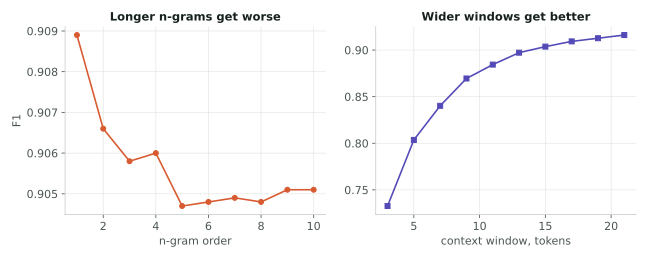

A classifier that decides whether a tweet is offensive. Eight of them, in fact — three sentence-transformer embeddings against two simple bag of words baselines — on 56,745 labelled tweets, to find out how much the extra machinery actually buys.
Deciding what to throw away
Cleaning social media text is mostly a series of decisions about what to destroy. Each one is cheap to make and expensive to get wrong, because the model never sees what you removed.
Contractions get expanded before punctuation is stripped.
Do it the other way round and can't becomes cant,
or worse, can and t — and a sentence that said the
opposite of what it now says goes into training with the original label.
Negation is exactly the thing you cannot afford to lose in a task about
intent.
Eleven stop words instead of NLTK's 179. The standard list
removes not, no, never, and it removes
you, me, they. For general topic
modelling that is fine. For detecting personal attacks it is the wrong list:
an insult is aimed at someone, so the pronouns are signal, and negation
flips meaning outright. I kept both and cut only true filler — articles,
conjunctions, and a handful of prepositions.
URLs, @mentions and HTML come out. Hashtag symbols come out but the word
stays, since #idiot is doing the same work as
idiot. Then lemmatisation, to stop the same word in three forms
being three features.
Checking the cleaning against the statistics
TF-IDF over unigrams and bigrams gives 5,000 features; a chi-square test keeps the 1,000 most discriminative, an 80% cut.
The useful part is not the reduction, it is the check. The features chi-square ranked highest were the same ones that dominated the word counts in the exploratory pass — explicit profanity first, then identity-based slurs, then aggressive verbs. Two independent views of the data agreeing is evidence the cleaning preserved the signal rather than flattening it. Had the top chi-square features been function words or artefacts, that would have been the moment to go back.
More context helps, more history doesn't

Two baselines that both take more of the sentence, moving in opposite directions. Longer n-grams get slightly worse: each additional order multiplies the feature space, and the longer sequences mostly appear once, in training, so the model memorises instead of generalising. Wider context windows get steadily better, all the way to the widest we tried.
The difference is direction. An n-gram only ever looks backwards from a token. A context window sees both sides. On a task where the offence often sits in the object of a sentence rather than the verb, the second half matters.
The result is a choice, not a winner

The bag of words baselines are the most precise models in the set. When they flag a tweet they are right about 96% of the time. They also miss the most: the best n-gram model let nearly a thousand toxic tweets through.
The transformer embeddings catch noticeably more and are wrong slightly more often when they do flag something. Neither corner is better in the abstract. It depends entirely on which error you would rather explain — a user whose harmless post was removed, or a user who was harassed by a post the filter let through.
We settled on recall as the primary metric and said so before looking at the table, because the costs are not symmetric and picking the metric afterwards means picking the winner. On that criterion the transformer embeddings win; on precision they lose. Both statements are in the results and both are true.
Reading the mistakes
We pulled the tweets every model got wrong and read them. Three things came out that no metric shows.
Vulgarity aimed at objects — a beer, a television show — was read as an attack on a person. Insults in quotation marks confused the models in both directions. And insults without a single rude word went straight through: when you say you make mediocre videos, you're being way too flattering is not something a lexical model can catch.
Some of the false negatives looked like label noise rather than model failure, and a few read as political statements rather than attacks, which raises a question about the annotation this dataset inherited from its sources. That is worth saying plainly: at 92% recall, a meaningful share of what is left may not be the model's fault at all.
Five-fold cross-validation confirmed the gap between the two families holds across splits, so the ranking is not an artefact of one unlucky partition.
The same reasoning about asymmetric errors drove a separate project of mine on detecting distress in public posts, where the cost of a miss is far higher and the metric choice matters more.